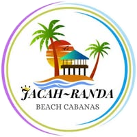

Jacah Randa Beach Resort currently relies on manual processes for handling guest service requests, bookings, and inventory tracking. Guests must physically approach the front desk or call staff to request services or make reservations, which often leads to delays, miscommunication, and dissatisfaction. Staff also face challenges in organizing requests, managing resources, and coordinating tasks efficiently especially during peak seasons.
This project proposes the development of an integrated mobile-based system that enables guests to submit service requests and book resort amenities digitally, while allowing staff to manage these requests, bookings, and inventory in real-time. The system will also implement role-based access control to ensure secure and efficient task delegation across departments.
General Problem:
Jacah Randa Beach Resort lacks a centralized digital system for managing service requests, bookings, and inventory, resulting in operational inefficiencies and diminished guest satisfaction.
Specific Problems:
General Objective:
To design and develop a mobile-based system that integrates service requests, booking management, inventory tracking, and role-based access control for Jacah Randa Beach Resort.
Specific Objectives:
To develop a mobile application that allows guests to digitally request services from their rooms, eliminating the need for physical visits or phone calls.
To create a staff dashboard that enables real-time tracking, prioritization, and management of service requests, improving response time and coordination.
To implement a unified booking system within the app for rooms and amenities, streamlining reservation processes and reducing administrative overhead.
To integrate an inventory management module that monitors item availability and usage, ensuring efficient resource allocation and preventing shortages.
To apply role-based access control (RBAC) to segregate staff responsibilities and secure system operations, enhancing data protection and workflow clarity.
Scope:
Limitations:
The project will follow the Agile Software Development Life Cycle (SDLC) with iterative sprints and stakeholder feedback.
Phases:
| Module | Feature | Description |
|---|---|---|
| Guest App | Service Request | Submit requests with optional photo upload |
| Guest App | Booking | Reserve rooms, amenities, or services |
| Staff Dashboard | Request Management | View, accept, and complete requests |
| Staff Dashboard | Booking Management | Approve, modify, or cancel bookings |
| Inventory | Stock Tracking | Monitor item availability and usage |
| Access Control | RBAC | Assign roles: Admin, Housekeeping, Kitchen, Maintenance |
| Notifications | Real-Time Alerts | Push updates to guests and staff |
| Status Tracking | Request Lifecycle | Pending → In Progress → Completed |